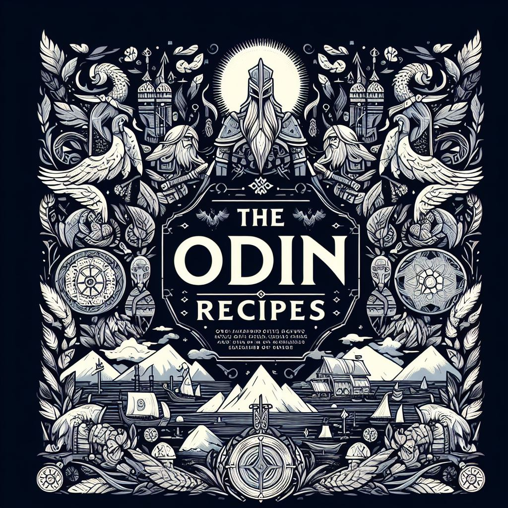

Welcome to The Odin Recipes
A culinary corner where I share four of my favorite go-to recipes that make my work week deliciously delightful.
These recipes are not only my personal favorites but also ones that are easy to whip up, adding a touch of simplicity to busy weekdays.
Whether you're a seasoned chef or a kitchen novice, you'll find these dishes both approachable and satisfying.
To enhance your cooking experience, I've thoughtfully included video links for each recipe.
These links provide step-by-step guidance, making it even easier for you to follow along and recreate these mouthwatering meals in your own kitchen.
From quick and flavorful dinners to savory delights that tantalize the taste buds, The Odin Recipes is your culinary companion for a delightful dining experience.
So, roll up your sleeves, don your apron, and get ready to embark on a culinary journey filled with joy and flavor.
Enjoy!